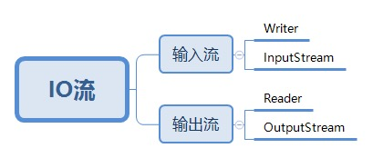
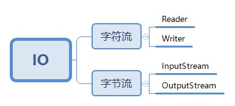
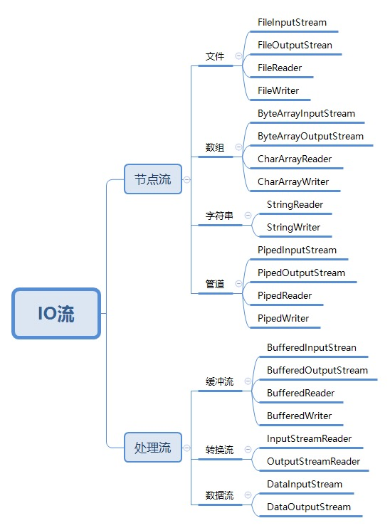
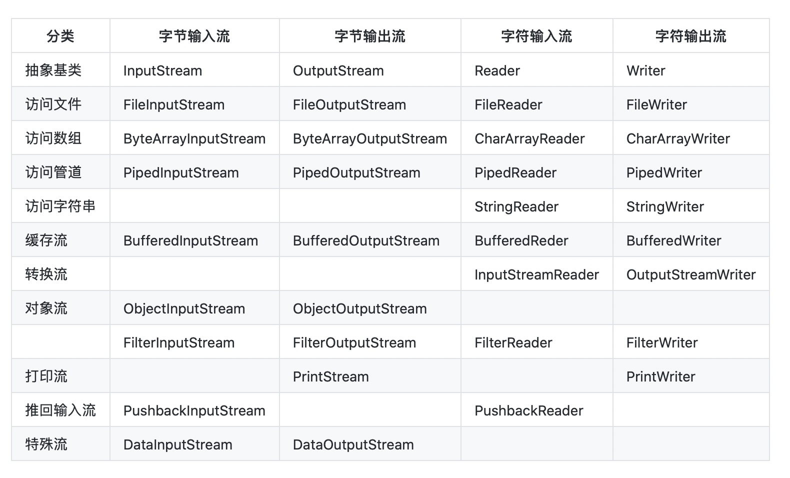
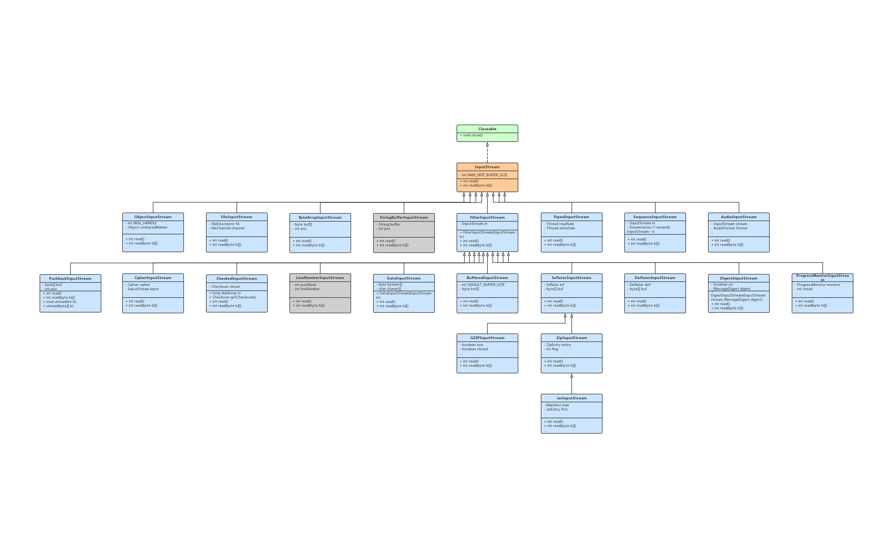
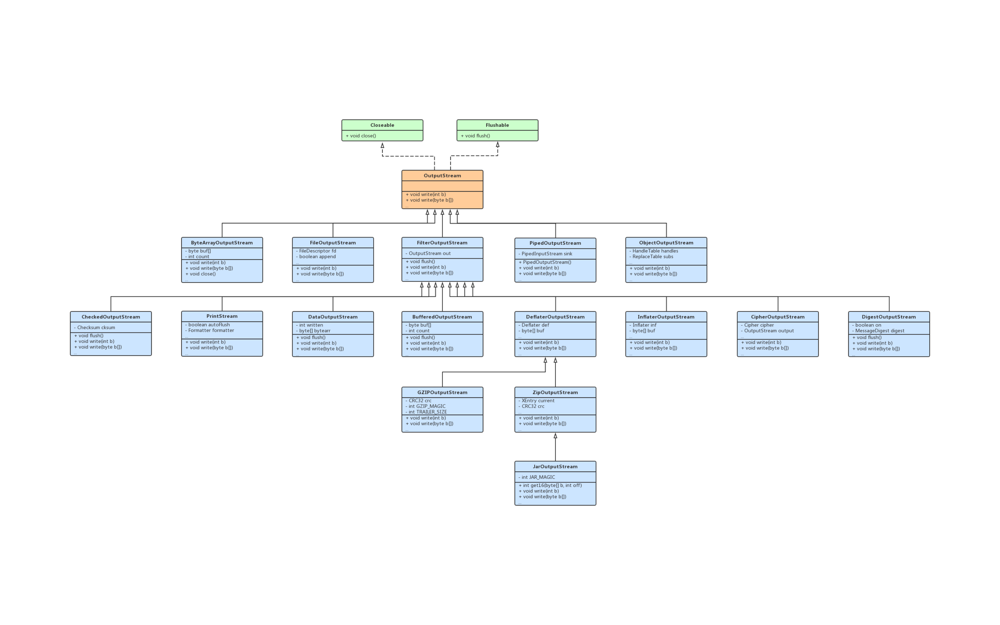
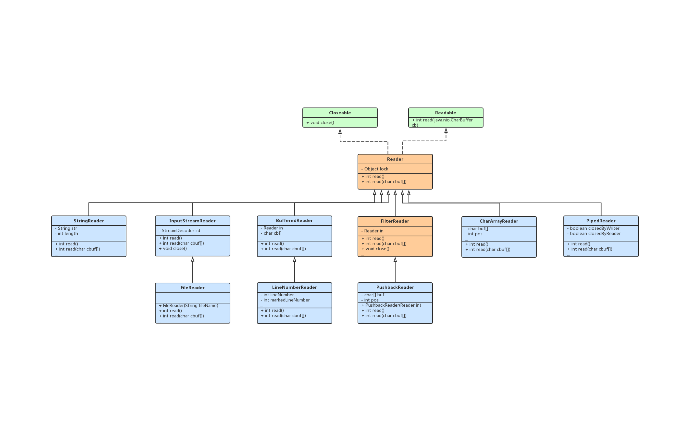
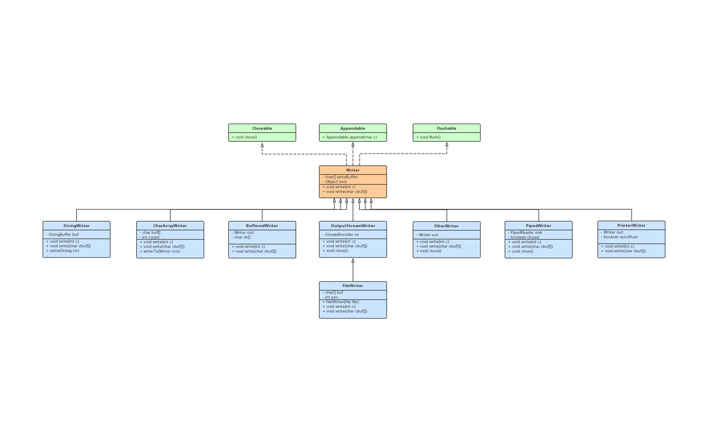

IO 流原理
I/O是Input/Output的缩写，I/O技术是非常实用的技术，用于处理设备之间的数据传输。如读/写文件，网络通讯等。- Java 程序中，对于数据的输入/输出操作以流（stream） 的方式进行。
java.io包下提供了各种“流”类和接口，用以获取不同种类的数据，并通过标准的方法输入或输出数据。- 输入 input：读取外部数据（磁 盘、光盘等存储设备的数据）到程序（内存）中。
- 输出 output：将程序（内存）数据输出到磁盘、光盘等存储设备中。
流的分类
按照数据流向分

- 字节流：字节流主要是操作byte类型数据。
- 字符流：因为数据编码的不同，而有了对字符进行高效操作的流对象。本质其实就是基于字节流读取时，去查了指定的码表。
区别：
- 读写单位不同：字节流以字节（8bit）为单位，字符流以字符为单位，根据码表映射字符，一次可能读16位字节。
- 处理对象不同：字节流能处理所有类型的数据（如 image、avi 等），而字符流只能处理字符类型的数据。
设备上的数据无论是图片或者视频，文字，它们都以二进制存储的。二进制的最终都是以一个8位为数据单元进行体现，所以计算机中的最小数据单元就是字节。意味着，字节流可以处理设备上的所有数据，所以字节流一样可以处理字符数据。
结论：
只要是处理纯文本数据，就优先考虑使用字符流。换句话说，能使用字符流的一定也可以使用字节流。
按照数据流向分

- 输入流：
InputStream或者Reader从文件中读到程序中。 - 输出流：
OutputStream或者Writer从程序中输出到文件中。
按照流的角色分

- 节点流：直接与数据源相连，读入或读出，可以从/向一个特定的 IO 设备（如磁盘、网络）读/写数据的流，称为节点流，节点流也被成为低级流。
- 处理流：处理流是对一个已存在的流进行连接或封装，通过封装后的流来实现数据读/写功能，处理流也被称为高级流。
当使用处理流进行输入/输出时，程序并不会直接连接到实际的数据源，没有和实际的输入/输出节点连接。使用处理流的一个明显好处是，只要使用相同的处理流，程序就可以采用完全相同的输入/输出代码来访问不同的数据源，随着处理流所包装节点流的变化，程序实际所访问的数据源也相应地发生变化。
IO 流体系

| 分类 | 字节输入流 | 字节输出流 | 字符输入流 | 字符输出流 |
|---|---|---|---|---|
| 抽象基类 | InputStream | OutputStream | Reader | Writer |
| 访问文件 | FileInputStream | FileOutputStream | FileReader | FileWriter |
| 访问数组 | ByteArrayInputStream | ByteArrayOutputStream | CharArrayReader | CharArrayWriter |
| 访问管道 | PipedInputStream | PipedOutputStream | PipedReader | PipedWriter |
| 访问字符串 | StringReader | StringWriter | ||
| 缓存流 | BufferedInputStream | BufferedOutputStream | BufferedReder | BufferedWriter |
| 转换流 | InputStreamReader | OutputStreamWriter | ||
| 对象流 | ObjectInputStream | ObjectOutputStream | ||
| FilterInputStream | FilterOutputStream | FilterReader | FilterWriter | |
| 打印流 | PrintStream | PrintWriter | ||
| 推回输入流 | PushbackInputStream | PushbackReader | ||
| 特殊流 | DataInputStream | DataOutputStream |
流中主要方法梳理
InputStream 中的主要方法

abstract int read()：从流中读取数据，读取一个字节，返回值为所读得字节int read(byte b[])：从流中读取数据，读取多个字节，放置到字节数组 b 中，通常读取的字节数量为 b 的长度，返回值为实际独取的字节的数量。int read(byte b[], int off, int len)：从流中读取数据，读取 len 个字节，放置到以下标 off 开始字节数组 b 中，返回值为实际读取的字节的数量。long skip(long n)：读指针跳过 n 个字节不读，返回值为实际跳过的字节数量。int available()：返回值为流中尚未读取的字节的数量。void close()：关闭输入流。synchronized void mark(int readlimit)：记录当前指针的所在位置，readlimit 表示读指针读出的 readlimit 个字节后，所标记的指针位置才实效。synchronized void reset()：把读指针重新指向用 mark 方法所记录的位置。boolean markSupported()：当前的流是否支持读指针的记录功能。
注意：其中 read() 返回的是读入的一个字节所对应的 int 值(0-255),而 read(byte[] b) 和 read(byte[] b, int off, int len) 返回的是读入的字节数。
OutputStream 中的主要方法

abstract void write(int b)：输出数据，往流中写一个字节 b。void write(byte b[])：输出数据，往流中写一个字节数组 b。void write(byte b[], int off, int len)：输出数据，把字节数组 b 中从下标 off 开始，长度为 len 的字节写入到流中。void flush()：刷空输出流，并输出所有被缓存的字节。由于某些流支持缓存功能，该方法将把缓存中所有内容强制输出到流中。void close()：关闭输出流。
Reader 中的主要方法

int read(java.nio.CharBuffer target)：试图读取字符入指定的字符缓冲区。int read()：读取单个字符。int read(char cbuf[])：读取字符到一个数组中。int read(char cbuf[], int off, int len)：读取字符到一个数组中的一部分。long skip(long n)：跳过 n 个字符。boolean ready()：通知此流是否已准备好被读取。boolean markSupported()：告诉此流是否支持 mark() 操作。void mark(int readAheadLimit)：标记流中的当前位置。void reset()：重置流。void close()：关闭该流并释放与之关联的所有系统资源。
Writer 中的主要方法

void write(int c)：写入单个字符。void write(char cbuf[])：写入字符数组。abstract void write(char cbuf[], int off, int len)：写入字符数组的一部分。void write(String str)：写入一个字符串。void write(String str, int off, int len)：写入一个字符串的一部分。Writer append(CharSequence csq)：将指定的字符序列追加写到 writer 中。Writer append(CharSequence csq, int start, int end)：将指定的字符序列的子序列追加写入此 writer。Writer append(char c)：将指定字符追加到这个 writer。abstract void flush()：刷新流。abstract void close()：关闭流，但要先刷新它。
If you like this blog or find it useful for you, you are welcome to comment on it. You are also welcome to share this blog, so that more people can participate in it. If the images used in the blog infringe your copyright, please contact the author to delete them. Thank you !